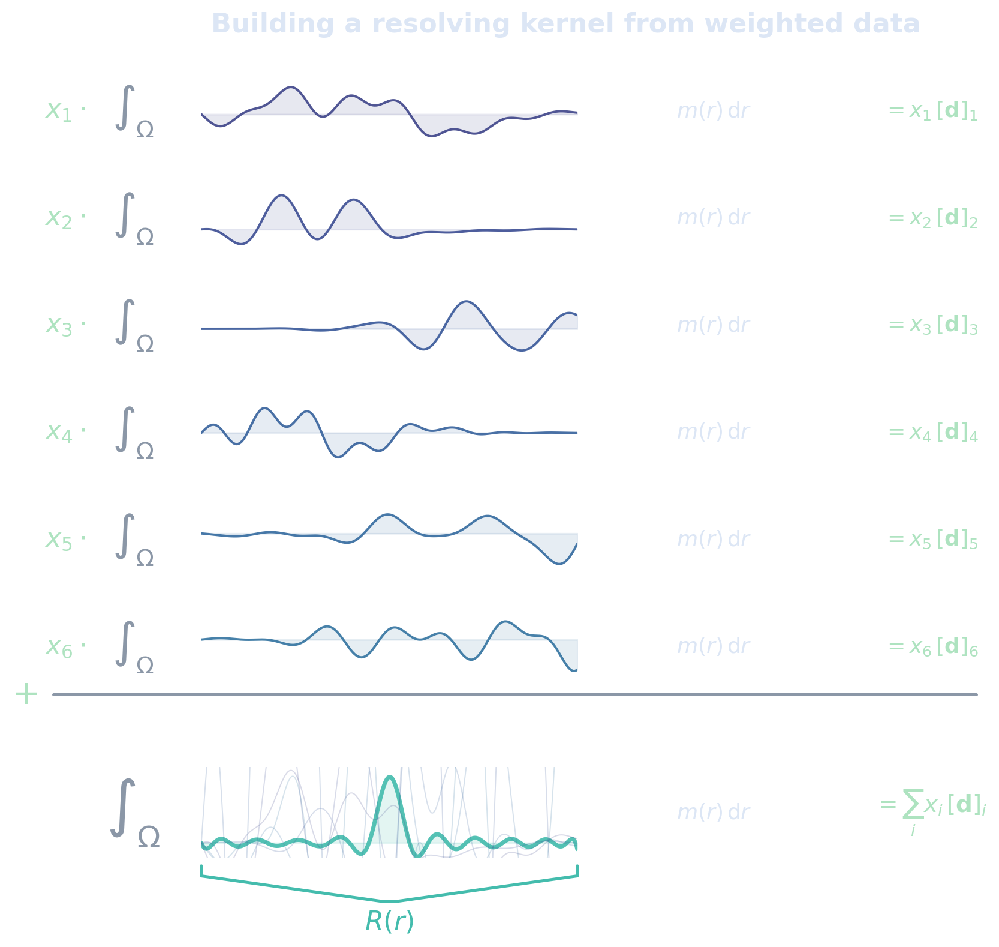
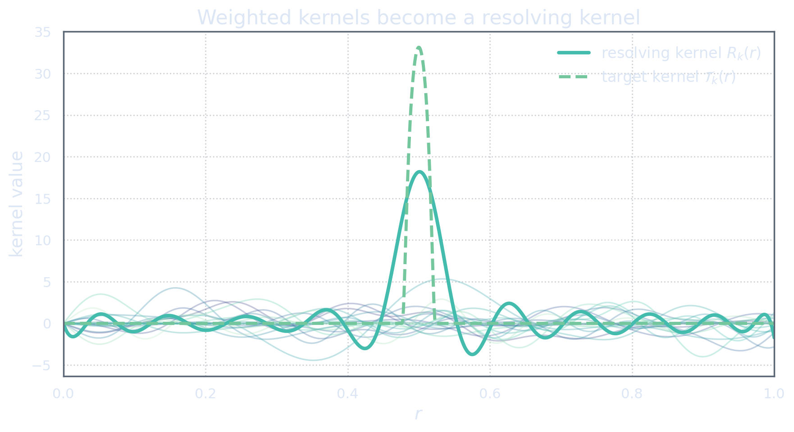

Combining Data Means Combining Kernels
A weighted sum of data
We now make the first SOLA move.
The data are \[[\mathbf d]_i = \int_\Omega K_i(r)m(r)\dd r, \qquad i=1,\dots,N_d.\] Each datum is one weighted integral of the model. Suppose we choose scalar weights \[x_1,\dots,x_{N_d}\in\mathbb R.\] Equivalently, we collect them into the finite-dimensional vector
\[\mathbf x = (x_1,\dots,x_{N_d})^\top \in\mathbb R^{N_d}, \qquad [\mathbf x]_i=x_i.\] notation feels fussy? tap ➤Now form the weighted sum of data \[\sum_{i=1}^{N_d}x_i [\mathbf d]_i.\] Substituting the integral expression for each datum gives \[\sum_{i=1}^{N_d}x_i [\mathbf d]_i = \sum_{i=1}^{N_d} x_i \int_\Omega K_i(r)m(r)\dd r.\] At first glance, this is only a weighted sum of numbers. But because each number came from an integral, the weights can be moved inside the integral: \[\sum_{i=1}^{N_d}x_i [\mathbf d]_i = \int_\Omega \left( \sum_{i=1}^{N_d}x_iK_i(r) \right) m(r)\dd r.\]

This is the small algebraic hinge on which the whole SOLA door swings.
A weighted sum of data is not just a weighted sum of numbers. It is itself another weighted integral of the model. The new weight is obtained by taking the same weighted sum of the sensitivity kernels.
Combining data combines the eyes of the experiment. The new datum sees the model through the combined kernel \[x_1K_1+\cdots+x_{N_d}K_{N_d}.\]
This explains why SOLA is a natural method in linear inverse problems. The data are linear questions asked of the model. If we combine those questions linearly, we obtain another linear question.
The hope is that this new question can be made to resemble the question we actually wanted to ask.
The resolving kernel
The kernel \[R(r) := \sum_{i=1}^{N_d}x_iK_i(r)\] is called the resolving kernel associated with the weights \(\mathbf x\).
With this notation, the weighted data sum becomes \[\sum_{i=1}^{N_d}x_i [\mathbf d]_i = \int_\Omega R(r)m(r)\dd r.\] So the weighted data sum is the model \(m\) tested against the resolving kernel \(R\).
This is the first important change of perspective. We are no longer thinking only about data values. We are thinking about what kernel those data values correspond to.
Choosing data weights is the same thing as choosing a kernel from the span of the sensitivity kernels.
In this scalar setting, the SOLA problem becomes almost visible by inspection. We have a target kernel \(T\), defining the desired property \[[\mathbf p]_1 = \int_\Omega T(r)m(r)\dd r.\] We have a resolving kernel \[R = \sum_{i=1}^{N_d}x_iK_i,\] which defines the property-like quantity actually built from the data: \[\sum_{i=1}^{N_d}x_i [\mathbf d]_i = \int_\Omega R(r)m(r)\dd r.\] SOLA asks us to choose \(\mathbf x\) so that \[R\approx T.\]

The target kernel is the kernel we asked for. The resolving kernel is the kernel the data can actually synthesize using the chosen weights.
For the moment, we do not judge this difference. We simply name it.
Why the combination should be linear
It is worth asking why SOLA searches for linear combinations of data in the first place. Why not take a square, a product, a ratio, or some other nonlinear expression?
The answer is that the quantities we are trying to estimate are linear functionals of the model. For example, \[[\mathbf p]_1 = \int_\Omega T(r)m(r)\dd r\] is linear in \(m\). Likewise, each datum \[[\mathbf d]_i = \int_\Omega K_i(r)m(r)\dd r\] is linear in \(m\).
A linear combination of linear functionals is still a linear functional: \[m \mapsto \sum_{i=1}^{N_d}x_i \int_\Omega K_i(r)m(r)\dd r\] is the same as \[m \mapsto \int_\Omega R(r)m(r)\dd r.\] Thus the weighted data sum remains the same kind of mathematical object as the target property.
A nonlinear combination would usually break this structure. For example, \(d_1^2+d_2^2\) is generally not a linear functional of \(m\). It is quadratic in the data, and therefore usually quadratic in the model. It cannot usually be represented as \(\int_\Omega Q(r)m(r)\dd r\) for some kernel \(Q\).
This does not mean nonlinear methods are impossible or useless. It only means that they would be solving a different kind of problem. SOLA is designed for the case where both the data and the desired properties are linear questions about the model.
SOLA uses linear combinations because it wants to turn linear data functionals into another linear functional. The algebra is not an accident; it is the method.
There is another practical reason this matters. Once the data combination is linear, the effect of data noise can be propagated cleanly. If the data covariance is \(\mathbf C_D\), and the SOLA weights are collected into a matrix \(\mathbf X\), then the propagated covariance later takes the form \[\mathbf C_P=\mathbf X\mathbf C_D\mathbf X^*.\] This simple covariance propagation is one of the reasons SOLA remains computationally attractive.
For now, however, we stay in the noiseless picture. The key object is still the resolving kernel.
The span limitation
The resolving kernel has the form \[R = \sum_{i=1}^{N_d}x_iK_i.\] Therefore it must belong to the finite-dimensional span \[R\in \spanop\{K_1,\dots,K_{N_d}\}.\]
This is not a flaw. It is the geometry of the problem.
The data give us the kernels \(K_1,\dots,K_{N_d}\). By taking linear combinations of the data, we can only create linear combinations of those kernels. If the target kernel \(T\) lies in this span, then there exist weights \(\mathbf x\) such that \[R=T.\] In that special case, SOLA can reproduce the target kernel exactly.
But if \[T \notin \spanop\{K_1,\dots,K_{N_d}\},\] then no choice of weights can make the resolving kernel identical to the target kernel. The best we can do is approximate it.
SOLA cannot synthesize a kernel that is not available through the span of the sensitivity kernels. The method can ask for a target, but the data decide which resolving kernels are actually reachable.
This limitation should not be read too negatively. In practice, this is exactly why SOLA is useful: it makes the mismatch visible. Instead of hiding the resolution of the estimate inside a black-box model reconstruction, SOLA asks us to look directly at the resolving kernels.
The next chapter turns this geometric idea into an optimization problem.
The Noiseless, Unconstrained SOLA Problem
Matching the target kernel
We now formalize the simplest possible SOLA problem.
There is one target kernel \(T\), and we look for weights \[\mathbf x=(x_1,\dots,x_{N_d})^\top\] such that \[R = \sum_{i=1}^{N_d}x_iK_i\] is close to \(T\).
To say “close”, we need a way of measuring the size of the mismatch \[T-R.\] For this first presentation, imagine that all kernels live in the same Hilbert space \(\M\), and that closeness is measured using the norm \(\|\cdot\|_{\M}\). Then the simplest SOLA problem is \[\mathbf x_0 = \argmin_{\mathbf x\in\mathbb R^{N_d}} \left\| T-R \right\|_{\M}^2.\]
In words, we choose the weights whose resolving kernel best approximates the target kernel.
In a fully careful treatment, the sensitivity kernels and target kernels should be placed in the correct dual or Riesz-represented Hilbert setting. As noted in Act 1, the physical integral kernel \(K_i(r)\) and the Riesz representer in the \(\M\)-inner product coincide only when \(\M=L^2(\Omega)\); for Sobolev model spaces they differ. For the present explanation, we identify linear functionals with their Riesz representers and write them simply as \(K_i\) and \(T_k\). This keeps the picture readable while preserving the main idea.
The solution is a projection problem. We are projecting the target kernel onto the space spanned by the sensitivity kernels: \[\spanop\{K_1,\dots,K_{N_d}\}.\] If \(T_k\) already lies in that span, the projection is exact. Otherwise, the projection gives the reachable kernel closest to the requested one.
The target kernel is a destination. The span of the sensitivity kernels is the road network. SOLA chooses the reachable point closest to the destination.
This is the cleanest SOLA idea. There is no noise, no covariance, no constraint, and no regularization parameter. There is only the geometry of kernels.
Operator form
The scalar kernel picture is enough to understand the method, but it becomes cumbersome when we want several properties at once. So we now introduce the operator notation.
The forward map is \[G:\M\to\D,\] where \(\D\simeq\mathbb R^{N_d}\). Its components are \[[G(m)]_i = (K_i,m)_{\M}, \qquad i=1,\dots,N_d.\]
The property map is \[\Tau:\M\to\Pspace,\] where \(\Pspace\simeq\mathbb R^{N_p}\). Its components are \[[\Tau(m)]_k = (T_k,m)_{\M}, \qquad k=1,\dots,N_p.\] For a given model \(m\), the property vector is \[\mathbf p=\Tau(m)\in\Pspace.\]
SOLA now seeks a finite-dimensional matrix \[\mathbf X:\D\to\Pspace\] such that \[\mathbf XG\approx \Tau.\] The composite map \[\mathcal{A}:=\mathbf XG:\M\to\Pspace\] is the approximate property map built from the data.
Thus, for data \[\mathbf d=G(m),\] the SOLA estimate is \[\widetilde{\mathbf p} = \mathbf X\mathbf d.\] In the noiseless idealization, this is \[\widetilde{\mathbf p} = \mathbf XG(m) = \mathcal{A}(m).\]
The target map is \(\Tau\). The map actually built from data is \(\mathcal{A}=\mathbf XG\). The SOLA objective is to make these two maps close.
The noiseless unconstrained SOLA problem is therefore \[\mathbf X_0 = \argmin_{\mathbf X} \left\| \Tau-\mathbf XG \right\|_{\HS}^2.\]
Here \(\|\cdot\|_{\HS}\) denotes the Hilbert-Schmidt norm. In this finite-property setting, it can be understood as summing the squared mismatch over all target components. If the \(k\)th component of \(\mathbf XG\) has resolving kernel \(R_k\), then the objective is essentially measuring \[\sum_{k=1}^{N_p} \left\| T_k-R_k \right\|_{\M}^2,\] up to the precise Hilbert-space identifications being used.
The scalar problem asks for one resolving kernel close to one target kernel. The operator problem asks for a whole family of resolving kernels close to a whole family of target kernels.
The normal equation
We now derive the solution of the unconstrained problem \[\mathbf X_0 = \argmin_{\mathbf X} \left\| \Tau-\mathbf XG \right\|_{\HS}^2.\] Define \[f(\mathbf X) := \left\| \Tau-\mathbf XG \right\|_{\HS}^2.\] Perturb \(\mathbf X\) by a finite-dimensional matrix \(\mathbf H:\D\to\Pspace\). Then \[f(\mathbf X+\mathbf H) = \left\| \Tau-(\mathbf X+\mathbf H)G \right\|_{\HS}^2.\] Expanding, \[f(\mathbf X+\mathbf H) = \left\| \Tau-\mathbf XG-\mathbf HG \right\|_{\HS}^2.\] Keeping only the terms linear in \(\mathbf H\), the first variation is \[\delta f = -2 ( \Tau-\mathbf XG, \mathbf HG )_{\HS}.\] Using the Hilbert-Schmidt adjoint relation, this can be written as \[\delta f = -2 ( (\Tau-\mathbf XG)G^*, \mathbf H )_{\HS}.\] Since this must vanish for every perturbation \(\mathbf H\), the stationarity condition is \[(\Tau-\mathbf XG)G^*=0.\] Equivalently, \[\mathbf XGG^*=\Tau G^*.\]
If \(GG^*:\D\to\D\) is invertible, then the solution is \[\mathbf X_0 = \Tau G^*(GG^*)^{-1}.\]
The operator \(G^*:\D\to\M\) maps data-space vectors back into the model space. The composition \[GG^*:\D\to\D\] is therefore a data-space operator. Since \(\D\) is finite-dimensional, it is represented by a finite matrix. In components, it contains the inner products between sensitivity kernels: \[[\mathbf{GG^*}]_{ij} = (K_j,K_i)_{\M}, \qquad i,j=1,\dots,N_d,\] up to the chosen data-space inner product convention.
The expression \[\mathbf X_0 = \Tau G^*(GG^*)^{-1}\] has a simple interpretation. The factor \[G^*(GG^*)^{-1}\] back-projects data into a particular model-space representative. Then \(\Tau\) evaluates the target properties of that representative.
But SOLA does not need to be introduced as model reconstruction followed by property evaluation. It can be introduced more directly: \(\mathbf X_0\) is the finite-dimensional data combination that makes \(\mathbf XG\) as close as possible to \(\Tau\).
What this first solution means
The operator \[\mathbf X_0 = \Tau G^*(GG^*)^{-1}\] is the best unconstrained linear reshuffling of the data, measured by the Hilbert-Schmidt mismatch between the target property map \(\Tau\) and the approximate property map \[\mathcal{A}_0:=\mathbf X_0G.\]
For each component \(k=1,\dots,N_p\), the \(k\)th row of \(\mathbf X_0\) gives weights \[[\mathbf X_0]_{k1},\dots,[\mathbf X_0]_{kN_d}.\] These weights define the \(k\)th resolving kernel \[R_{0,k} = \sum_{i=1}^{N_d} [\mathbf X_0]_{ki}K_i.\] The \(k\)th SOLA output is therefore \[[\widetilde{\mathbf p}]_k = \sum_{i=1}^{N_d} [\mathbf X_0]_{ki}[\mathbf d]_i = \int_\Omega R_{0,k}(r)m(r)\dd r.\]
This is the object SOLA has actually built: not a direct measurement of the requested target kernel \(T_k\), but a direct measurement of the resolving kernel \(R_{0,k}\).
In the best case, \[R_{0,k}=T_k.\] Then the SOLA output equals the desired target property. More commonly, \[R_{0,k}\approx T_k.\] Then the SOLA output should be read through the resolving kernel itself.
For now, we simply note the distinction. The whole point of SOLA is that it gives us these resolving kernels explicitly. They are not hidden inside the method. They are part of the deliverable.
At this stage, SOLA is a best-approximation problem: find the property-like map that can be built from the available data map.
The next act adds an important calibration condition. If the target kernels are supposed to represent averages, then the resolving kernels should behave like averages too. Shape alone is not enough. The kernels also need the right mass.